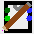
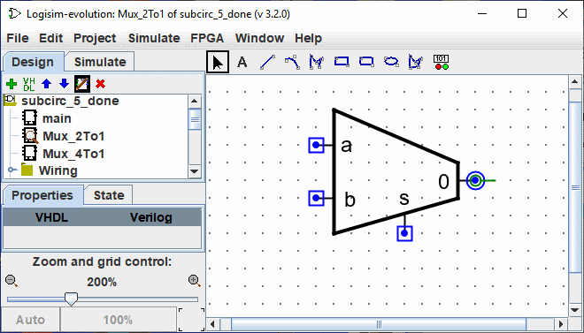
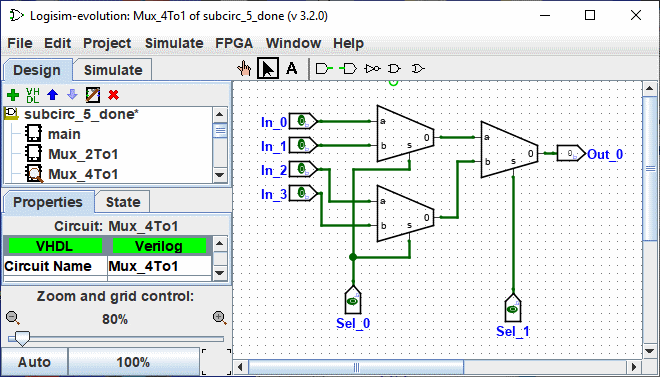
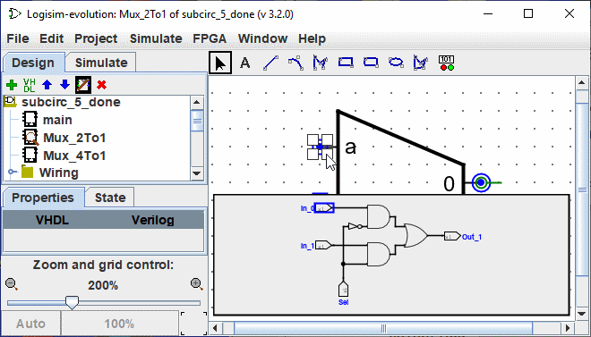
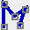
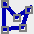

Customized appearance
The default appearance is very usable, and indeed Logisim existed for many years with no other option. If, however, you prefer that the subcircuit be drawn differently, you can select | Project |→| Edit Circuit Appearance | , and
Logisim's interface will switch from its regular layout-editing interface to an interface for drawing the circuit's appearance. You can also click the far-right icon () in the explorer pane's upper toolbar.
Below, we are editing the 2:1 multiplexer's appearance so that it is drawn with the usual trapezoid rather than a rectangle.

With the appearance for the 2:1 multiplexer drawn as above, the layout for the 4:1 multiplexer would then appear as the following.

The appearance editor is like a traditional drawing program, but there are a few special symbols for indicating how the drawing works when placed into a circuit's layout. These special symbols cannot be removed.
-
The green circle with a line coming out of it, which we'll call the anchor. () There is exactly one anchor in each subcircuit appearance. Each component in a circuit has a single point identifying its location; a user sees this when creating a new component: The mouse click identifies just a single location, and the component is placed relative to that (usually with the primary output at the mouse's location) The anchor identifies the mouse's location relative to the overall drawing when the subcircuit is created.
The anchor also identifies the appearance's facing, as indicated by the direction the anchor's line points from its circle. When placing the subcircuit into a layout, the user can change the subcircuit's facing; the anchor's facing indicates in which direction the appearance is oriented. In our example, the anchor is facing east, and each instance of the subcircuit in the Mux_4to1 is also facing east, so they are all drawn in the same orientation as the Mux_2to1 appearance.
-
The blue circles () and squares with dots (
 ) in them are the subcircuit's
) in them are the subcircuit's ports.
There are exactly as many ports as there are input and output pins in the circuit. Ports corresponding to inputs are drawn as squares, while ports corresponding to outputs are drawn as circles. Each port indicates how a wire connecting into the circuit will correspond to an input or output pin within the layout.
When you select a port, Logisim will indicate the corresponding pin by popping up a miniature diagram of the layout in the window's bottom right corner, with the corresponding pin(s) drawn in blue. This does not happen when all ports are selected.

We can change the zoom of the image with a Ctrl+Mouse Wheel or by using the magnifying glass buttons or the slider at the bottom left of the workspace. The rate is displayed.
The toolbar contains tools for adding additional shapes, as shown below. Some keys (Ctrl,Alt,Shift) have an effect on the way shapes are drawn. These keys can be combined with each other.
Ctrl: Aligns the end points on the grid.
Shift: Orient the lines at an angle multiple of 45° or make the figures symmetrical (Square, Rounded Square, Circle).
Alt: Draws the figures from their centre.
Below is a small presentation of each tool

|
Selection Tool : Select, move, copy, paste the symbols. |

|
Text Tool : Add, insert or edit a text. |

|
Line Tool : Creates a line segment. |

|
Curve tool: Create a quadratic Bezier curve. The first click and drag specifies the beginning of the line, the second click and drag ends the line and sets the curvature. A click on the line shows you the three control points. Schift and click on central control point impose a symmetrical curve. Alt and click on center point draws the curve through the control point (under the mouse). |
|  | Polylines tool Creates a sequence of connected lines, each click starts a new line. A double-click ends the sequence. |

|
Rectangle tool Create a rectangle or a square with rounded edges ( Shift ) through dragging from one corner to the opposite corner. |

|
Rectangle tool Create a rectangle or a square ( Shift ) through dragging from one corner to the opposite corner. |

|
Oval tool Creates an oval or circle ( Shift ) through dragging from one corner of its bounding box to the opposite corner. |
|  | Polygon tool Create an arbitrary polygon, each click starts a new face. A double-click or Enter key or click the starting vertex to complete the shape. |
Next: Debugging a subcircuit.